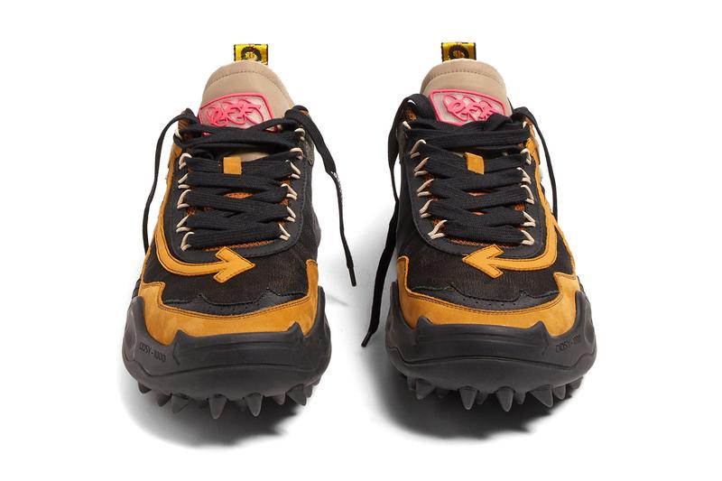
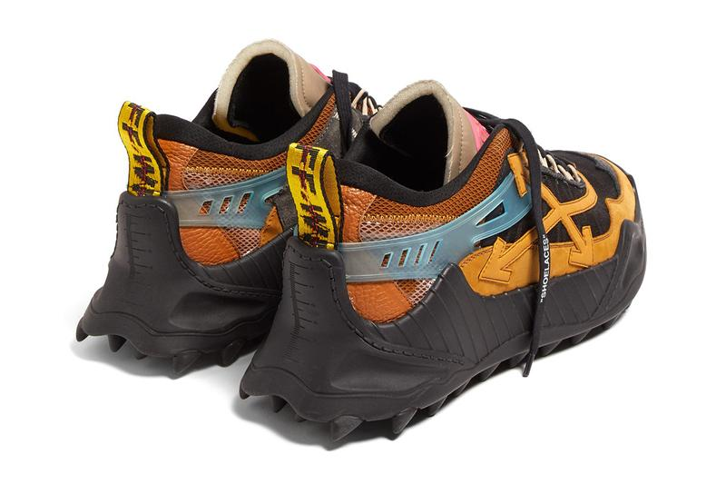
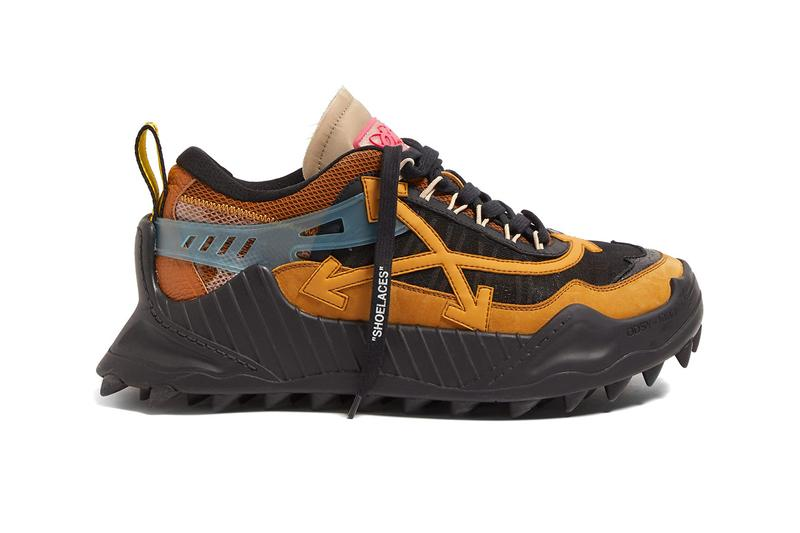

HIGHFASHN
Мода
Обувь
Кроссовки Off-White ™ ODSY-1000 с шипами в индустриальном стиле
получили более широкий выпуск
Показывая необычные петли для шнурков и надписи “SHOELACES”



Недавно получивший звание самого популярного в мире бренда в Q1 Lyst за первый квартал 2019 года, Off-White ™ выпустил новейший силуэт обуви - гибридные кроссовки ODSY-1000.
Кроссовки с шипами Off-White ™ ODSY-1000 2.0 сочетают в себе дизайнерские признаки беговых кроссовок, прогулочных ботинок и более традиционных низких кроссовок. Естественно, в кроссовках есть множество фирменных фишек Off-White ™, таких как фирменная цитата «SHOELACES», петля на заднем каблуке, которая имитирует промышленный пояс бренда, мотив в виде поперечной стрелки на боковых сторонах и логотип «OFF» на язычке.
Сетка и верх из замши располагаются на утолщенной толстой подошве с акцентом на ряд промышленных признаков, таких как измерения метрической системы на пятке и объемный носок в комплекте со стрелкой с рисунком. В завершение выделяющаяся подошва кроссовка на которой марка ODSY-1000 по направлению к передней части носка.
Ранее выпущенные в pop-up бренда «FLORAL SHOP» в парижском отеле Costes в январе, кроссовки будут выпущены в более большом количестве магазинов, таких как MATCHESFASHION.com. Вы можете предварительно заказать вашу пару за $ 392 USD сейчас.